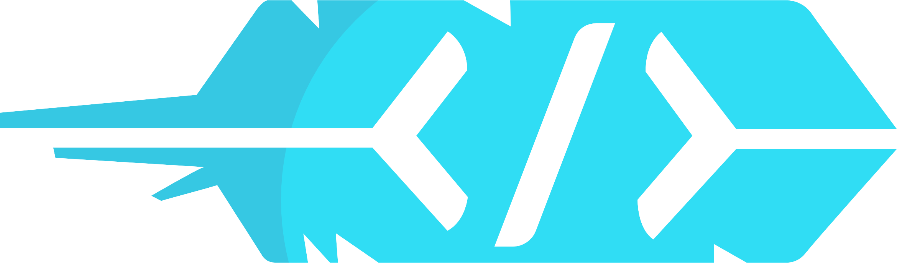

HACKFSU will return
ABOUT
HackFSU was an annual, student-led hackathon at Florida State Unversity, running from spring 2014 to fall 2019.
Over the course of 5 years, HackFSU saw hundreds of volunteers, dozen of high-profile sponsors, and thousands of attendees from all across the country.
If you an FSU student interested in continuing the legacy of HackFSU, please contact webmaster@hackfsu.com.